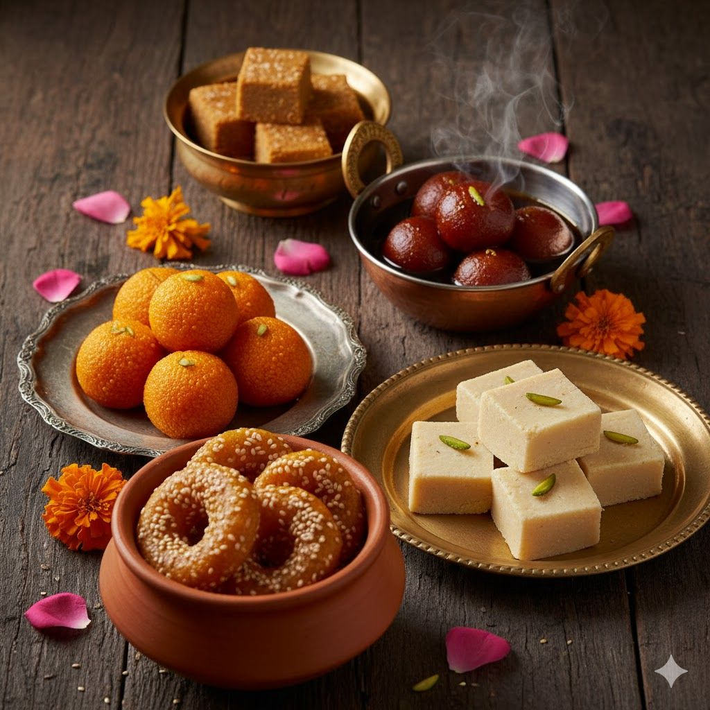
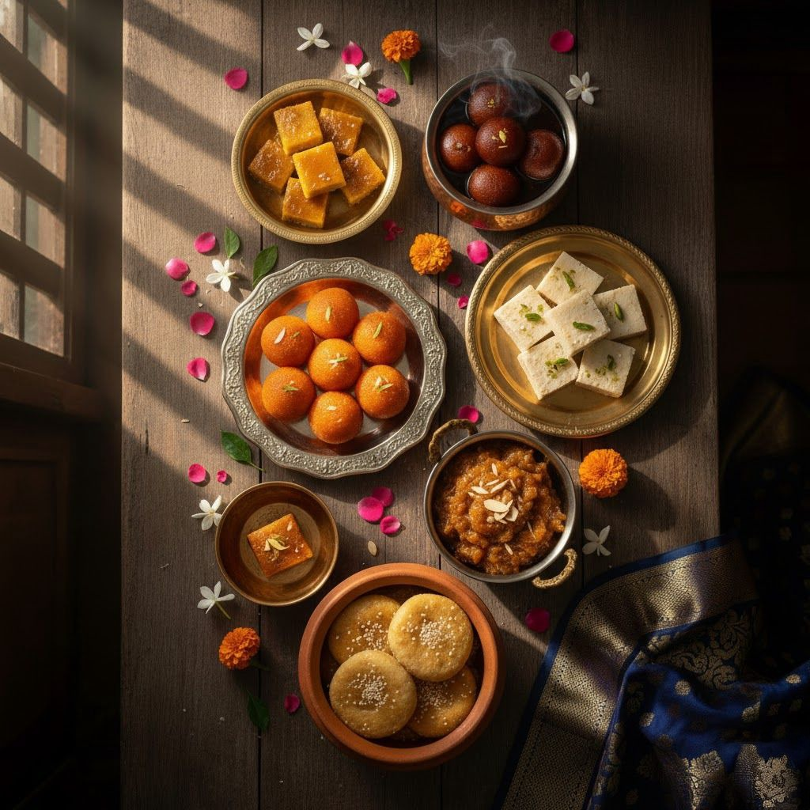
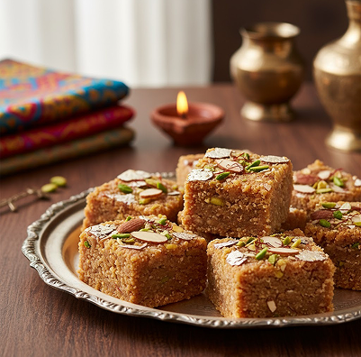
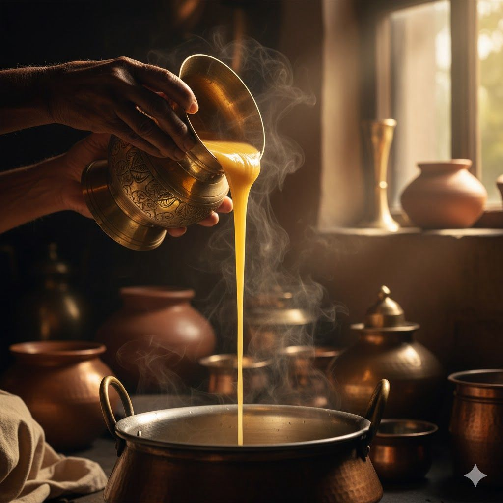
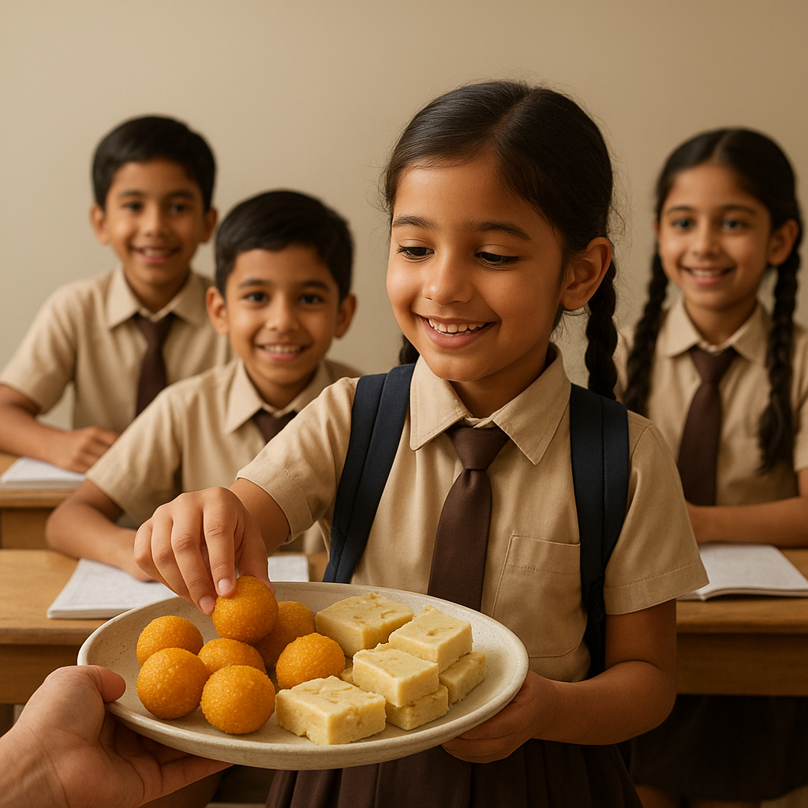

Beginning with a small push-cart in 1948, Sri G. Pulla Reddy Garu turned a simple dream into a brand synonymous with quality. His sheer willpower and dedication created a legacy that spread from Kurnool to Hyderabad, upholding the values of purity, integrity, and honesty.
Quality is the hallmark of G. Pulla Reddy Sweets. We use only the finest ingredients, including our own pure ghee, rich milk, and the best dry fruits. Our strict standards ensure every sweet is authentic, hygienic, and worthy of our trusted name.
A philanthropist and humanist, the founder established the G. Pulla Reddy Charities Trust and multiple educational institutions, including engineering and technology colleges, demonstrating a profound commitment to social upliftment and providing educational opportunities to the community.
At a time when India was just forming an identity of its own, one man had the fortitude and foresight to establish a unique identity for Kurnool and the sweets that represented this new found freedom. In 1948, Sri G. Pullareddy Garu began this sweet journey with a simple dream - to preserve and share the authentic taste of traditional Indian sweets.
Sri G. Pullareddy Garu (Founder) inspired by the core values of Sri Kasi Reddy Garu, his uncle and mentor, G. Pullareddy established a legacy built on trust, quality, and unwavering commitment to tradition. His vision was simple yet profound - to create sweets that would become an integral part of every celebration and bring families together.

Headed by Tradition, Driven by Purity

Rooted in the rich culture of Kurnool, our tradition is the soul of everything we make. Each sweet follows age-old recipes passed down through generations — prepared with care, devotion, and the authentic taste of Andhra’s heritage. We continue to craft sweets the traditional way, preserving the warmth and honesty that began in our founder’s kitchen

Purity is our foundation — in ingredients, preparation, and purpose. We select only the finest ghee, nuts, milk, and sugar, ensuring every sweet reflects uncompromised quality. Every step of our process, from sourcing to serving, upholds the values of honesty, hygiene, and heartfelt craftsmanship that define the G. Pulla Reddy name

Our responsibility begins with what we serve. We are committed to providing safe, hygienic, and high-quality food products that families can trust and enjoy. Every sweet that leaves our kitchen carries our promise of goodness — crafted in clean environments, with authentic ingredients and genuine care, so that every bite is pure, wholesome, and worthy of our legacy.